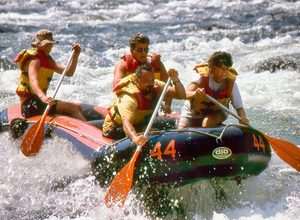
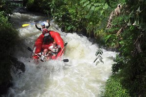
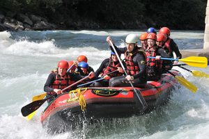
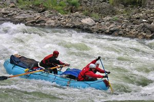

Nossa missão é levar emoção e aventura para quem ama a natureza, com segurança e diversão em cada passeio.

Nossa missão é levar emoção e aventura para quem ama a natureza, com segurança e diversão em cada passeio.
A Rio Bravo Rafting começou em 2010, quando um grupo de amigos apaixonados por rios resolveu transformar o hobby em negócio.

Desde então já levamos milhares de pessoas para viver a emoção das corredeiras, sempre com guias certificados e foco total em segurança.



